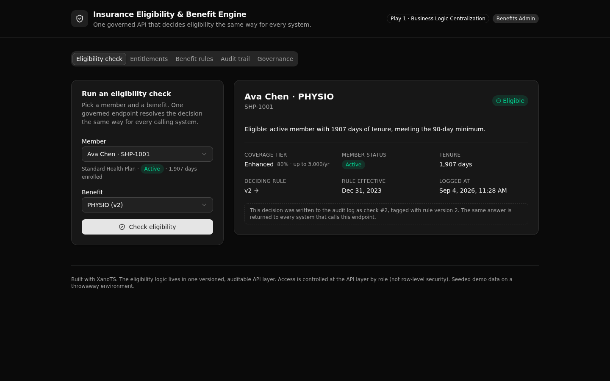

One governed API that decides insurance eligibility the same way for every system, and returns the exact plan rule version that made the call.

An insurer asks the same eligibility question in a claims tool, a member portal, and a support console. When each one keeps its own copy of the plan rules, the answers drift and no one can explain a past decision. This backend makes that logic one thing.
A single check endpoint resolves the active rule, evaluates the gates, and returns the decision, the tier, and the rule version. Every caller gets the same answer.
One active rule per plan and benefit, with a history of superseded versions. A decision records the version that made it.
Every check writes a row with the decision, reason, rule version, and tier. The log is filterable by member, benefit, or decision.
Two roles enforced at the endpoint, read fresh from the staff table on every call. Middleware-style access control, not row-level security.
Public endpoints need no token. Admin endpoints require a benefits_admin bearer token.
| Verb | Path | What it does | Access |
|---|---|---|---|
| POST | /api:ie_eligibility/check | The governed decision, plus an audit write | Public |
| GET | /api:ie_eligibility/entitlements/{member_number} | Every benefit the member currently passes | Public |
| GET | /api:ie_eligibility/members | Member directory with plan and tenure | Public |
| GET | /api:ie_eligibility/catalog | The active benefit rules with plan and tier | Public |
| GET | /api:ie_rules/detail/{benefit_rule_id} | One rule plus its full version history | Public |
| GET | /api:ie_rules/list | Every rule version across every plan | benefits_admin |
| GET | /api:ie_audit/checks | The decision log, filterable and joined | benefits_admin |
| POST | /api:ie_seed/reset | Clear the log and reload the demo data | benefits_admin |
| POST | /api:ie_auth/login | Verify a credential and mint a role token | Public |
| GET | /api:ie_auth/me | The signed-in caller's record | Auth |
Pick a member and a benefit, run the check, see the decision with the tier, the reason, and the deciding rule version.
Every benefit a member is covered for right now, run through the same gates.
The active rule for each plan and benefit, with its full version history, including superseded versions.
The decision log, newest first, joined to the rule version and tier each check used.
Sign in as either role and run an access probe that shows the API return 401, 403, and 200.
Point your coding agent at the repo, or clone it yourself. Either way you get a live, governed Xano backend in about a minute.
Use the XanoTS template at
https://github.com/xano-scratch/insurance-eligibility-benefit-engine
as a starting point. Clone it, run npm install, then npx xanots login and
npm run xano:deploy to get a live governed eligibility backend I can read
and extend. Then help me adapt the plan rules to my own benefits.Or run it directly:
git clone https://github.com/xano-scratch/insurance-eligibility-benefit-engine
cd insurance-eligibility-benefit-engine
npm install
npx xanots login
npm run xano:deploy